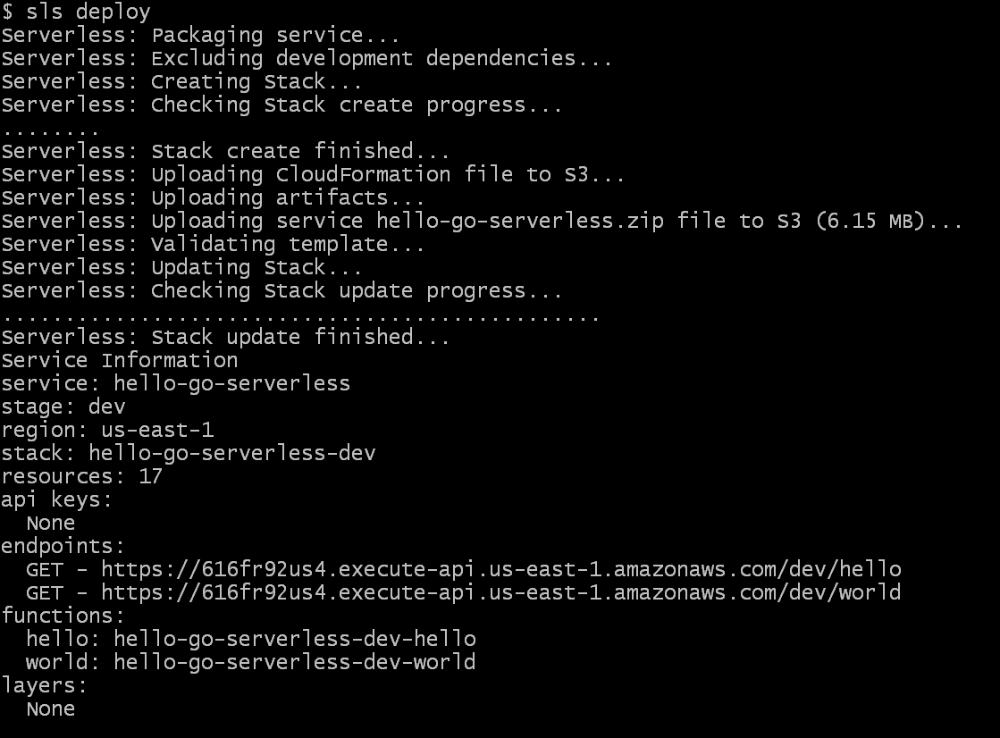

In this tutorial, we are going to create a golang serverless application and deploy it to the AWS cloud.
Table of Content
Prerequisites
- Serverless Installed
- AWS account
- Connect AWS account to serverless
All these are covered in detail in the last tutorial.
Getting Started
Create a new directory hello-go-serverless.
Open the terminal inside the project.
Run the below command to initiate the serverless application using aws-go-mod template.
This will create a basic scaffolding of the serverless project.
serverless create --template aws-go-mod

This template has created 2 application hello and world, and serverless.yml where serverless deployment configuration is defined. It also created a couple of deployment scripts.
Open hello/main.go
package main
import (
"bytes"
"context"
"encoding/json"
"github.com/aws/aws-lambda-go/events"
"github.com/aws/aws-lambda-go/lambda"
)
// Response is of type APIGatewayProxyResponse since we're leveraging the
// AWS Lambda Proxy Request functionality (default behavior)
//
// https://serverless.com/framework/docs/providers/aws/events/apigateway/#lambda-proxy-integration
type Response events.APIGatewayProxyResponse
// Handler is our lambda handler invoked by the `lambda.Start` function call
func Handler(ctx context.Context) (Response, error) {
var buf bytes.Buffer
body, err := json.Marshal(map[string]interface{}{
"message": "Go Serverless v1.0! Your function executed successfully!",
})
if err != nil {
return Response{StatusCode: 404}, err
}
json.HTMLEscape(&buf, body)
resp := Response{
StatusCode: 200,
IsBase64Encoded: false,
Body: buf.String(),
Headers: map[string]string{
"Content-Type": "application/json",
"X-MyCompany-Func-Reply": "hello-handler",
},
}
return resp, nil
}
func main() {
lambda.Start(Handler)
}
This function is creating a JSON object using json.Marshal and then sent as a response.
The lambda package is initiating the Handler function and events package is used to create aws APIGatewayProxyResponse object.
This function is exposed as an API using the AWS APIGateway service. These APIs are configured in the serverless.yml file.
Check this to learn more about JSON in golang.
Open serverless.yml
In the provider section, the provider is aws, the runtime is go1.x, by default its region is us-east-1 and stage is dev. Using the staging option, you can deploy the project in different environments like dev, prod or test.
Update the provider section.
provider:
name: aws
runtime: go1.x
stage: dev
region: us-east-1
You don't have to if you're okay with the defaults. It is just good practice.
In the package section, it is configuring what to include and exclude in the lambda function deployment.
It is excluding all the files except bin folder. After building the application, the function binary will save in the bin folder.
package:
exclude:
- ./**
include:
- ./bin/**
In the functions, bin/hello is the entry point of hello function. The function can be triggered using the hello route. After deployment, it will create a new route in the AWS API gateway and link it to the AWS lambda function in which hello function will deploy.
functions:
hello:
handler: bin/hello
events:
- http:
path: hello
method: get
world function is the same as hello.
You can use the
Makefilefor the below steps. It is a deployment script, which will run all the below steps for you.
Build the application
Open the terminal in the project and execute the gomod.sh file.
Windows User
sh gomod.sh
Linux User or other UNIX based OS users First, make it executable and then run it.
chmod u+x gomod.sh
./gomod.sh
This will initiate go modules go.mod in the project and add all the project dependencies in it. It is similar to the package.json in the node.js.
Build
Create binaries of hello and world application for Linux OS.
export GO111MODULE=on
env GOOS=linux go build -ldflags="-s -w" -o bin/hello hello/main.go
env GOOS=linux go build -ldflags="-s -w" -o bin/world world/main.go
It will generate binaries of the application and save them in the bin folder.
Deploy
I am assuming that you have an AWS account and it is connected to the Serverless.
If you not check this to setup.
Run the below command to deploy it to the AWS lambda.
serverless deploy
You can use
slsforserverless. It is a shorthand notation.

Test the application
Copy the endpoint from the deployment output and either try it on a browser or use the curl command to check.
$ curl https://616fr92us4.execute-api.us-east-1.amazonaws.com/dev/hello
Output
% Total % Received % Xferd Average Speed Time Time Time Current
Dload Upload Total Spent Left Speed
100 70 100 70 0 0 63 0 0:00:01 0:00:01 --:--:-- 63
{"message":"Go Serverless v1.0! Your function executed successfully!"}
World
$ curl https://616fr92us4.execute-api.us-east-1.amazonaws.com/dev/world
Output
% Total % Received % Xferd Average Speed Time Time Time Current
Dload Upload Total Spent Left Speed
100 69 100 69 0 0 76 0 --:--:-- --:--:-- --:--:-- 76
{"message":"Okay so your other function also executed successfully!"}
Conclusion
Serverless is the perfect companion for the golang. In the upcoming tutorials, we will integrate multiple services in serverless like DB, SNS etc.
Thanks for reading.
Cover is designed in Canva